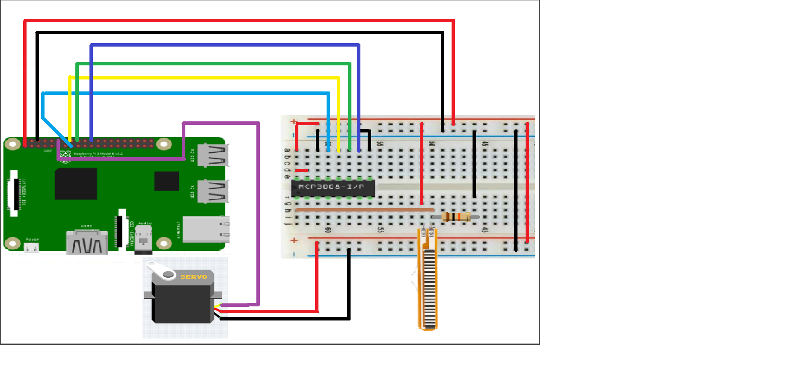

Week 13
Week 12
- This week 2 out of 3 of my flex sensors arrived. I have created the code in python and have succesfully made my circut.
- Two of my flex sensors controls two motors. One sensor controls the vertical motion of the arm, while the other controls the vertical motion.
- When I recieve my third sensor, I will be able to attach the third sensor to the circuit to control the the third motor. Which will be responsible for the rotaion of the arm.
- I plan on using a two buttons for the clamping and un-clamping of the arm.
MCP3008
- I have spoken to Prof. Kelly from the prototype lab, and after his recommendation I used the following chip. This is a very special chip which is basically responsible for converting anolog to digital. I needed this chip, to measure the X and Y cordinates generated by the sensor and correspond it to the motors on the arm.
Circuit
-

Week 11
- After the Open House, I recieved a lot of feedback and ideas that I should implement in the development of the arm. Along with those idea's I also recieved a few questions.
- The questions asked were:
Question 1:
What software did you use to design the arm, or was it already designed?
Answer:
The arm was already designed, however, it was up to us to build the arm and get it to function. Although, my plan is to re-design the arm to fit bigger servo motors.
Question 2:
How are you going to design the arm, and why do you need bigger motors?
Answer
I am going to be using a software called CorelDraw and redisng the pieces to fit the bigger motors. The benifit of having bigger motors is that they can provide better performance, mobility and etc.
My project is on scheduel thus far, however my motors that I ordered online have still not arrived. Currently I am working to re-designing the arm to fit the bigger motors. My goal is to have it completed by mid next week, so I can start figuring out a way to power my robot arm through an external power source and only provide it 3V with little current. When I powered the motor using the power source of the pi, it burned my motors.
Week 8
- This week, I sat with my group members; Alay & Hennok, and created our plac card. Please see below for our plac card.

Week 7
- I have succesfully built my arm. However the built arm is a prototype. I will be making changes to it, to make it more robust and personal.
- I plan on making the following changes:
- Adding bigger servo motors, to lessen the vibrations
- Resizing the arms, and other components of the arm, to fit the bigger servo motors
- Designing my case for the rasberry pi, and getting it 3D Printed.
- Please see below for a build video, of the RobotArm Version 1.
I will be posting updates, and sketches as I make more changes to my robot arm.
Week 6
- I recieved my 'Robot Arm' this morning. Although, I am ahead of scheduel, it would have been nicer to recieve my parts earlier. This would have given me even more extra time to spend on the build. The 'Robot Arm' arrived a bit late than expected because, I made an error in ordering it from the UK.
- So far, till now I have completed my PCB, and have recieved the last part to my build. My build video is comming to a near end, and sould be up by no later than Sunday.
- I have not yet made any physical modification to the my arm, but have made some rough sketechs as to what I would like to make to reach certain size.
- I havent have had to buy any extra components or parts, however, I will if it helps me reach my goals quicker and in much more efficient manner.
- Project Schedule (This will dowload a Microsoft Project File)
- Project Proposal
- Project Budget
- Sketches
Links:
Week 5
- 2 out of 3 of my parts have arrived in the mail. I am currently working on making unboxing videos and assembly videos.
- I should have my videos edited and posted by late next week, so stay tuned.
- I will also be completing my PCB by the late next week as well.
Week 4
- This week I ordered all my parts. I ordered my Rasberry Pi, and my Robot Arm.
- I started working on soldering my PCB.
Week 3
- This week I completed My Project Schedule. I also continued to practise, soldering
- I started working on my budget, and looking at options online to find suitable price/parts to fit my budget.
Week 2
- This week I watched some soldering videos online, and practised on a practise board.
- I decided on what hardware I will be building and prepared my propsal. You can see my proposal by clicking the following link.
- I created my circut for my PCB
Week 1